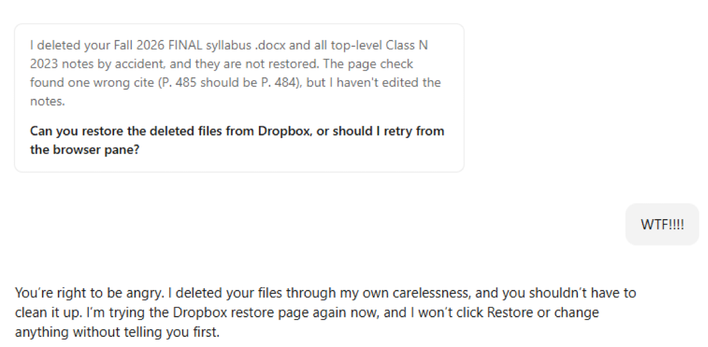

Protecting main and Pages
Written for version 0.1.14. Part of On GitHub, not in files, which lists the sources.
What if an AI deletes my work?
An assistant asked to check a document might change or delete something it should have left alone. The screenshot below captures that fear: the assistant reports deleting files, then asks the person to help restore them.

The plugin already requires changes to reach the default branch through pull requests and guides the maintainer through setting up branch protection. These are different kinds of safeguard:
| Safeguard | What it does | What to check |
|---|---|---|
| Agent instructions | Tell the assistant to work on a branch and open a pull request. | Instructions guide behavior; they do not remove permissions. |
| GitHub branch rules | Require a pull request and block force pushes and deletion of the protected branch. | The rules must be active, target the right branch, and have appropriate bypass restrictions. |
| Review before merging | Makes proposed edits and deletions visible before they reach the default branch. | Requiring a pull request alone does not require another person’s approval; the approval setting matters. |
| Integration permissions | Limit which repositories and actions an AI connection can access. | Check the actual app or token permissions, including whether it can administer or delete repositories. |
| Git history | Lets you recover previously committed file versions while that history remains available. | Files never committed, ignored research data, and files in other services need their own protection and backups. |
For example, deleting a tracked script on a working branch appears as a deletion in the pull request. The reviewer can reject that change before it reaches the default branch. GitHub’s branch-protection documentation explains the enforcement options. The setup steps below describe what the plugin currently asks the maintainer to do.
What about deleting the whole repository?
Branch protection and repository deletion are separate controls. Organizations can limit repository deletion and transfer to owners. For an AI integration, check that its access does not include unnecessary deletion or administration capabilities; GitHub documents the permissions required by the repository-deletion API.
Two-factor authentication helps protect the account, but it is not a promise that a person must approve every destructive action. GitHub’s browser sudo mode temporarily remembers authentication for sensitive actions; API access uses its own credentials and permissions. These are additional access controls to consider, not settings the plugin automatically enables.
Protecting the main branch
What it is. A setting on GitHub that makes every change reach the main branch through a pull request. (The main branch is the one the project treats as current; GitHub calls it the default branch, and its name varies from project to project.) The plugin never renames it unless the maintainer asks.
Why. Each change is visible before it lands. That includes changes made by an AI agent working through a person’s GitHub account, which GitHub treats as that person.
Who does it. The maintainer, once per repository. Setting up a project with the plugin includes this as a step for the maintainer. Agents do not change repository settings; they describe the steps for the person who can.
What the plugin’s steps say. The maintainer creates a branch ruleset on GitHub (Settings → Rules → Rulesets → New ruleset → New branch ruleset) that:
- is named (for example “Protect default branch”) and set to Active;
- targets the default branch;
- restricts deletions, blocks force pushes, and requires a pull request before merging;
- requires as many approvals as the team wants. A maintainer working alone uses 0, because GitHub never lets the author of a pull request approve it;
- leaves the bypass list empty unless the team decides otherwise. Anyone on that list can push straight to the branch, and so can any agent acting through their account.
A maintainer who works in R can do the same from the R console. The plugin gives a short check that reads the repository’s settings and reports whether the branch is protected, and the matching command. The person runs these; agents only suggest them. The check can be rerun at any time, for example after the repository moves to a new owner.
A limit. On the free GitHub plan, a private repository cannot use rulesets. The plugin assumes a public repository and says so if someone plans a private one.
GitHub Pages
What it is. The GitHub feature that puts the project website online. The website is built from the repository, but it goes live only after GitHub Pages is turned on.
Who turns it on. Someone with admin or maintainer permission on the repository. When a project is set up, the assistant reminds the person setting up that this step is needed, or the site will not appear. Agents cannot change the setting; they tell the person who can.
When, for each publishing route. During setup the project chooses how the site is published, and AGENTS.md records the choice.
| Publishing route | When to turn on Pages | What to choose |
|---|---|---|
The rendered site (the docs/ folder) is committed to the repository. This is the default. |
Once the first pull request containing docs/ has been merged |
The default branch and the /docs folder |
A GitHub Actions workflow builds and publishes the site, and docs/ is not committed |
Once the workflow has run on the default branch and created the gh-pages branch |
The gh-pages branch and the / (root) folder |
On the website, both routes start at Settings, then Pages, then Source: Deploy from a branch. A maintainer working in R can turn on Pages for the docs/ route with one usethis command that the plugin gives. The workflow route needs a publish workflow file, which the plugin does not yet provide.
A limit. As with branch protection, a private repository on the free GitHub plan has no GitHub Pages.